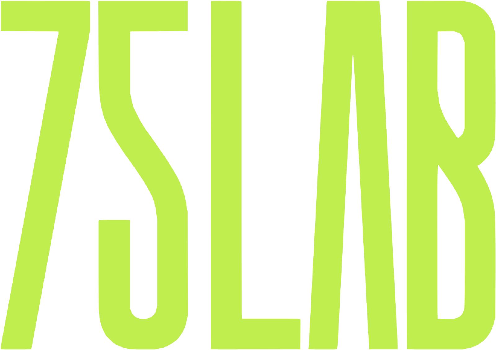
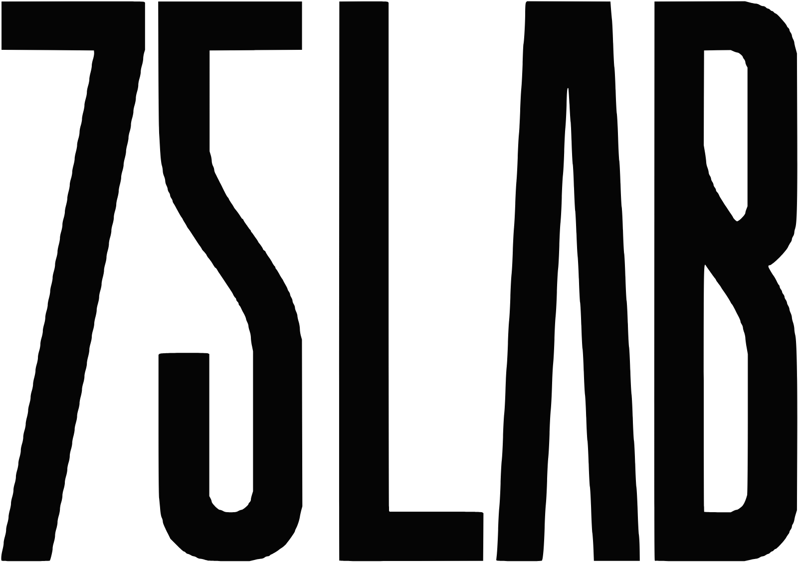

Kit de marca · imprensa e parceiros
75 LAB e Ariuno
Logos, textos oficiais e regras para matéria, apresentação de evento, legenda e cadastro. Contato: Caique Becker · caique.becker@75lab.com.br · +55 11 5026-7313
75 LAB






Linha oficial
75 LAB é a aceleradora de trade marketing que leva a ideia da estratégia até a gôndola, do display à plataforma que mede o resultado.
Versão curta (banner, assinatura, chamada de palco)
75 LAB, aceleradora de trade marketing. Ideia boa é a que acontece.
Versão para agências
A 75 LAB é o braço de trade marketing que a sua agência pode usar sem montar estrutura: estratégia, design, produção da peça e tecnologia de execução, com a marca da agência na frente.
Boilerplate (fim de matéria)
A 75 LAB é uma aceleradora de trade marketing de São Bernardo do Campo que reúne estratégia, design e produção em um só lugar. Atende indústria, varejo e agências com projeto de ponto de venda, produção de displays e enxoval de PDV, experiências em realidade aumentada e tecnologia própria de execução, como o Ariuno, plataforma de gestão para agências, e a Códice, de displays inteligentes e mídia de varejo.
O nome se escreve 75 LAB, com espaço e em caixa alta (nunca 75Lab nem 75lab). Logo sem sombra, sem contorno e sem girar. Tipografia: Big Shoulders Display nos títulos, Space Grotesk no texto.
Ariuno


Linha oficial
Ariuno é a plataforma de gestão para agências e times de projeto que junta briefing, tarefa, hora, aprovação do cliente e financeiro no mesmo lugar.
Boilerplate (fim de matéria)
O Ariuno é a plataforma de gestão para agências e times de projeto: briefing, tarefa, hora, aprovação do cliente e financeiro no mesmo lugar. Nasceu dentro da operação da 75 LAB, aceleradora de trade marketing de São Bernardo do Campo, onde é usado todos os dias antes de ser vendido. O usuário cliente é gratuito e ilimitado.
Ariuno com inicial minúscula no logotipo e maiúscula no texto corrido. Site: conheca.ariuno.com.br. Uma solução 75 LAB.